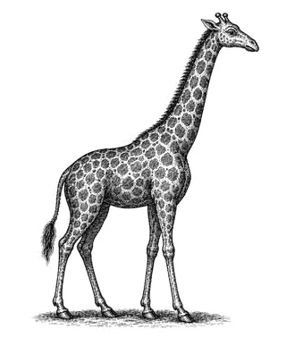
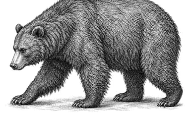
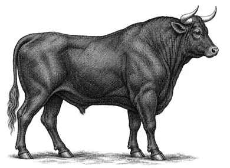
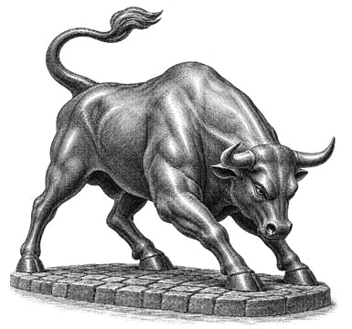

Unshakeable Composure
While panicked traders sell at the bottom, the Giraffe refuses to be spooked out of a position by falling prices, rumors, or short-sellers.
“Scared by Nothing.” — Established at the Amsterdam Exchange, 1688
Decades before London's charging metaphor, the world's first stock exchange had the Giraffe — calm, tall, and buying while Amsterdam panicked. Turn the page →
Lexicon of the Exchange
Gi·raffe
/dʒɪˈrɑːf/ noun · originated 1688
1. A fearless, relentlessly optimistic stock buyer who calmly acquires and holds long positions during a downturn, completely unbothered by falling prices, market panic, or short-sellers.
“The market fell eleven per cent and he simply bought more — a true giraffe.”
Decades before London's financial slang popularized the aggressive, charging market metaphor we use today, the world's first stock exchange in Amsterdam had the Giraffe — a symbol of unwavering composure and conviction in the face of a market downturn. It never charged. It never clawed. It simply stood tall, looked over the heads of the frightened crowd, and kept buying.
Amsterdam, Anno 1688
A philosopher, a merchant and a shareholder sit down to explain the strangest market on Earth.
When & where. The year is 1688, the city Amsterdam — birthplace of the modern stock market, built around the shares of the Dutch East India Company, the VOC. It is fifty-one years after the collapse of the 1637 Tulip Mania, and the Dutch have not stopped speculating.
The source text. That year appears Confusión de Confusiones — “Confusion of Confusions” — the earliest known book ever written about stock exchange trading, options, futures and investor psychology.
The passage. In the book a philosopher, a merchant and a shareholder discuss the mechanics of the exchange. Describing the optimistic buyers, the liebhaberen, who expect prices to rise regardless of market fear, de la Vega writes:
The [optimists] are like the giraffe which is scared by nothing… They love everything, they praise everything, they exaggerate everything.
A Short Chronology

De la Vega, Amsterdam. The buyers are “like the giraffe which is scared by nothing.”

First bear in print. The Tatler, London. Sellers who bet on a fall.
“Los liefhebberen son como la Zorafa que de nada se espanta.” Amsterdam, 1688
of the Market's Animals

First bulls in print. “You deal in Bears and Bulls.” Country Lasses, London.

Left on Wall Street two years after the 1987 crash.
Scared by nothing since 1688 · $GIRAFFE
Continued from Page III
In the early 1700s — roughly twenty to thirty years after de la Vega wrote — financial power shifted from Amsterdam to London. English traders adopted aggressive animal-fighting metaphors: paws swiping downward, horns thrusting upward. Amsterdam's calm, psychological Giraffe slowly faded from the everyday vocabulary of finance. Until now.
Paws swipe down. Horns thrust up.
The Giraffe simply stands.
A Short Chronology
The Man Who Named the Giraffe
Merchant, poet, philosopher — and godfather of behavioral finance.
Legacy. Financial historians now regard him as the godfather of behavioral finance. Centuries before modern economics, he documented herd behavior, overconfidence, regret aversion, and the conspiracies of the short-sellers — the contremineurs.
Three Pillars for a Falling Market
When the market falls, most animals run. One does not.
The crowd sees the next candle.
The Giraffe sees the horizon.
While panicked traders sell at the bottom, the Giraffe refuses to be spooked out of a position by falling prices, rumors, or short-sellers.
Standing tall above the panic at ground level, the Giraffe looks past temporary chaos toward long-term recovery and growth.
Unbothered and optimistic, the Giraffe treats downturns not as reasons to flee, but as chances to calmly buy and hold.
A Public Experiment
The market is calm. For now.
Unbothered.
Attempts: 0 · Successful: 0
Classified Advertisements
WANTED. Panic sellers. Will buy your shares at the bottom, no questions asked. Inquire: the Giraffe, Dam Square.
FOR SALE. Tulip bulbs, lightly used. Formerly worth a canal house. 1637 vintage. Best offer.
LOST. One short position. Last seen being calmly ignored by a giraffe. Small reward.
PERSONALS. Tall, calm optimist seeks fellow long-term holder. Must not scare easily.
SERVICES. Neck-stretching lessons for those who wish to see past the next candle.
NOTICE. Animals with claws or horns need not apply to this publication.
SITUATIONS. Contremineurs sought for confusing work. Ask for J. de la Vega.
TO LET. Ground-floor view of the market. Noisy, crowded, panicked. Giraffes may prefer upstairs.
LESSONS. Composure taught daily at the Exchange. First lesson: do not sell because your neighbour did.
NOW TRADING. $GIRAFFE on Solana. Contract: GwSkMEy1pRgNuMSdrApdX6DaexBopgLm5KU32VP9pump
No One in Amsterdam Had Ever Seen One
No live giraffes. Confusión de Confusiones was a text-only dialogue with no illustrations — and in 1688 there was no live giraffe anywhere in Europe. The last had been the Medici giraffe in Florence, in 1486.
The mental image. De la Vega and his readers pictured the animal through 16th- and 17th-century bestiaries and travel engravings — Conrad Gessner's Historia Animalium and the accounts of Ogier Ghiselin de Busbecq.
Camelopardalis
— which directly inspired de la Vega's metaphor.
Public Notice
Be it known that the Giraffe shall trade upon the Solana chain.
GwSkMEy1pRgNuMSdrApdX6DaexBopgLm5KU32VP9pump
Install Phantom or Solflare. Guard your recovery phrase from all short-sellers.
Purchase SOL on an exchange and send it to your wallet.
Swap SOL for $GIRAFFE using the contract above. Always check every character.
Stand tall. Ignore the panic at ground level. Be scared by nothing.
$GIRAFFE is a memecoin created for entertainment. It has no intrinsic value and no expectation of financial return. Nothing in this publication is financial advice. Cryptocurrency is volatile — even giraffes can fall.
Printed in Amsterdam, 1688 · Reprinted on Solana, 2026